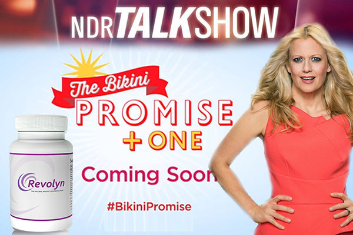
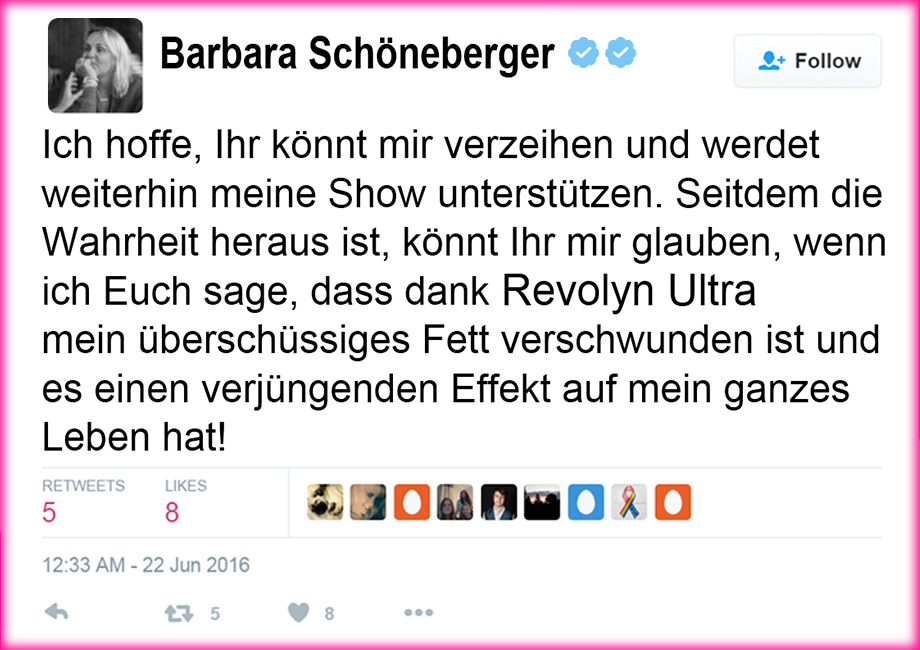
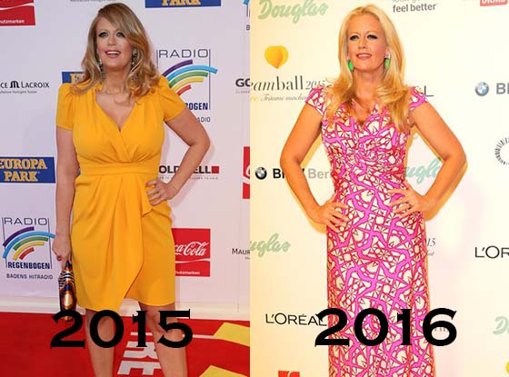
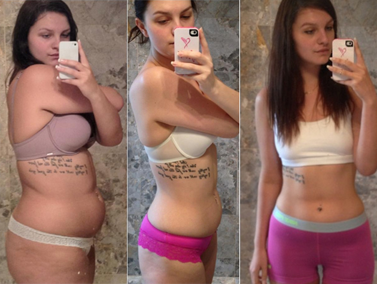
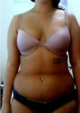
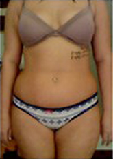
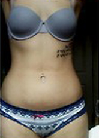
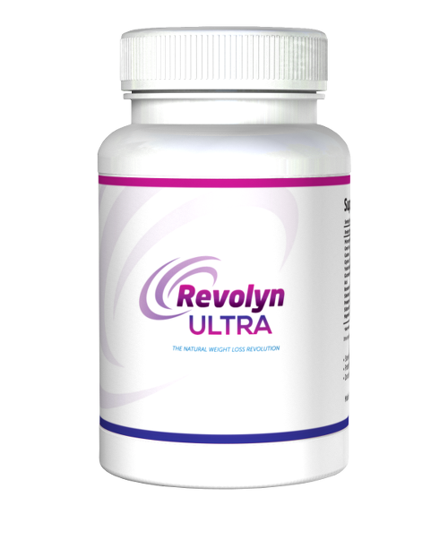
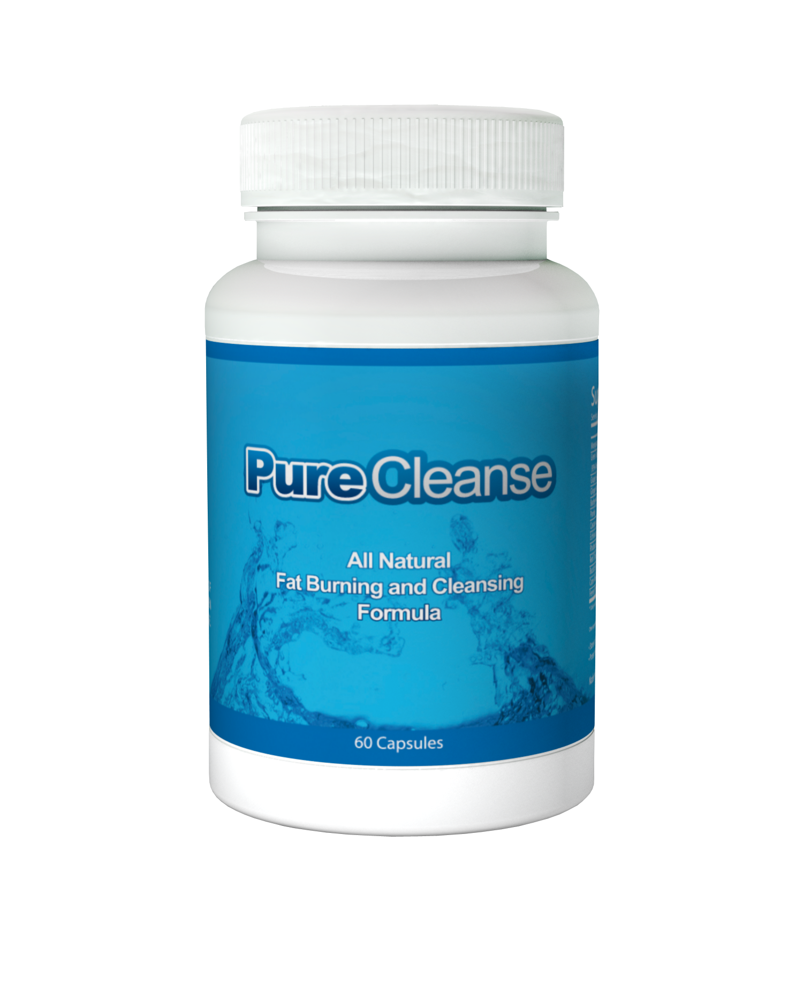

BARBARA SCHÖNEBERGER LÜGT UNS SCHON SEIT EINIGER ZEIT AN…
Werden Ihre lobenswerten Anstrengungen, ihre Fans zurückzugewinnen, ihre Show retten?
[BEAUTY REPORT, Bildder Frau]
Barbara war vergangene Woche Thema in allen Boulevardzeitungen und Magazinen! Wochenlang hatte Barbara ihren straffen Körper vor Millionen Deutsche Fernsehzuschauer präsentiert und uns über die Wichtigkeit harter Arbeit und anstrengender Übungen belehrt. Aber zur Überraschung vieler Fans wurde die von vielen als vertrauenswürdig angesehene und sehr beliebte TV-Moderatorin beim Lügen bezüglich ihres dramatischen Gewichtsverlustes ertappt. Die vielen Stunden harten Trainings und die akribische Diät, von denen sie gesprochen hatte, waren nichts als ein großer Schwindel, so meint eine vertrauliche Quelle aus Barbaras näherem Umfeld. Als dies bekannt wurde, verlor sie plötzlich ihre gesamte Glaubwürdigkeit und gilt seitdem als schlechter Scherz und Lügnerin und seitdem versucht sie, dieses schlechte Image wieder geradezubiegen…
Um wieder Vertrauen zu ihren früheren Fans aufzubauen, tweetet Barbara den wahren Grund ihrer beneidenswerten neuen Figur, die Revolyn-Ultra-Diät-System! Sie verspricht, dass die Revolyn-Ultra-Diät-System uns allen, Männern wie Frauen, dabei helfen wird, das überflüssige Fett zu verlieren, das wir unter allen Umständen wieder loswerden möchten! Um noch mehr Glaubwürdigkeit bei ihren Fans zurückzugewinnen, ging sie noch einen Schritt weiter und offenbarte uns gegenüber nicht nur, wie sie ihren neuen Bikinikörper erlangt hat, sondern sie macht ihren Fans auch ein zeitlich limitiertes Angebot, dieses neue Produkt kostenlos auszuprobieren und sie erklärte sich dazu bereit, das
Bild der Frau-Team mit dem Launch ihrer BikiniVersprechen-Kampagne zu beauftragen. Diese Kampagne hat das Ziel, Frauen zu helfen, den Körper zu erlangen, den sie sich wünschen!


Da sie gerade bei dieser großen Lüge erwischt wurde und daraufhin ihre Deutsche Zuschauer so enttäuscht waren, sind wir geneigt zu denken, dass sie ihre Lektion gelernt hat und uns nicht mehr anlügen wird. Aber wir haben uns dennoch dazu entschlossen, unsere Brancheninsider zu kontaktieren, um diese Geschichte zu verifizieren. Wir konnten dann, ohne darüber überrascht zu sein, zur Kenntnis nehmen, dass Barbara jetzt tatsächlich die Wahrheit sagt, aber das hat uns noch immer nicht ausgereicht und wir entschlossen uns, es selbst auszuprobieren!
Wir mussten mehr darüber erfahren, wie diese Revolyn-Ultra-Diät-System funktioniert. Da Barbara und ich als Arbeitskollegen ziemlich gut befreundet waren, war sie mehr als bereit, ihr Geheimnis mit mir zu teilen. Wie sich herausstellte, ist Revolyn-Ultra-Diät-System ein völlig natürliches Nahrungsergänzungsmittel, das komplett aus einer exotischen Himbeerart extrahiert wird, die ausschließlich in abgelegenen Regionen Südostasiens gedeiht. Es handelt sich um einen wirkungsvollen Inhaltsstoff, der laut klinischen Studien ungeliebtes überflüssiges Bauchfett innerhalb von Wochen verschwinden lässt!
Wir hatten noch nie von so etwas gehört, aber jetzt waren wir fasziniert. Nachdem wir die Details mit unserer Rechtsabteilung geklärt hatten, drängte unser Hauptherausgeber auf eine Fallstudie. Da ich schon mein ganzes Leben mit Gewichtsproblemen zu kämpfen habe, war ich mehr als glücklich, das als Erste auszuprobieren. Mir wurde die Aufgabe zuteil, diese Promi-Diät zu testen und meine Fortschritte für die kommenden 31 Tage zu dokumentieren.
Nach tagelangen Recherchen fanden wir mit
Revolyn Ultra
und Pure Cleanse auf Amazon dann ein allen Anforderungen entsprechendes Produkt. Bei den mehr als 4.000 positiven Kommentaren und einer Gesamtbewertung von 4,9 war ich von Revolyn-Ultra-Diät-System sehr angetan.

"Ich konnte nicht glauben, wie einfach es war. Ich habe weder meine Ernährung geändert, noch meine tägliche Routine, aber das Fett ist wie Butter abgeschmolzen. Ich liebe dieses Zeug! Endlich eine Diät, die einfach ist und funktioniert." -Barbara Schöneberger
Melissa McCarthy und Khloe Kardashian verwendet zu Revolyn-Ultra-Diät-System.
Das Geheimnis hinter Revolyn Ultra und Pure Cleanse ist seine Fähigkeit, den Appetit zu unterdrücken sowie den Stoffwechsel anzukurbeln und gleichzeitig mit seinen Antioxidantien ihr eingelagertes Fettgewebe und Verdauungssystem durchzuputzen.
DAS VERSPRICHT Revolyn Ultra:
- 1.) 4 Mal mehr Gewichtsverlust als bei Diät und Sport
- 2.) Verhindert die Umwandlung von Kohlenhydraten in Fett
- 3.) Stoppt emotionales Essen und verbessert die Stimmung
- 4.) Zügelt den Appetit
- 5.) Hilft beseitigen Bad Toxinen, die aufgebaut haben im Laufe der Jahre
DAS VERSPRICHT Pure Cleanse:
- 1.) Entfernt "Schlamm" von den Wänden des Dickdarms
- 2.) Hilft loswerden Blähungen
- 3.) Stufe Blutzucker
- 4.) Hilft den Stoffwechsel regulieren
Für unsere Fallstudie bestellten wir kostenlose Muster von Revolyn Ultra und Pure Cleanse. Barbara bietet derzeit zeitlich limitiert ihren Fans einen kostenlosen Monatsvorrat an, als Wiedergutmachung für den durch den Schwindel angerichteten Schaden (siehe auch untenstehende Links)!
Drei Tage späer wurde Revolyn Ultra und Pure Cleanse geliefert. Meine Ergebnisse… Sie sind interessant, um es mal vorsichtig zu formulieren!
Meine Ergebnisse – Ich verlor 14 KG Bauchfett in nur einem Monat!


Erste Woche
Nach einer Woche unter Verwendung beider Produkte war ich von den dramatischen Ergebnissen überrascht. Mein Energielevel war erhöht, und ich war noch nicht einmal hungrig. Eine willkommene Nebenwirkung der Revolyn-Ultra-Diät-System ist ihre Kraft, den Apetit zu zügeln.
Ich fühlte mich ehrlich gesagt fantastisch.
Das Beste von allem war, dass ich noch nicht einmal etwas an meinem Tagesablauf geändert hatte. Am Tag 7 stellte ich mich auf die Waage und traute meinen Augen nicht. Ich hatte 4kg abgenommen. Aber ich war immer noch nicht überzeugt, da gesagt wird, dass man am Anfang jeder Diät viel Wassergewicht verliert. Ich wollte abwarten und die Ergebnisse in den kommenden Wochen sehen. Aber es sah sicherlich gut aus! Ich wog nun zum ersten Mal seit Jahren wieder unter 55 kg!

Zweite Woche
Nach zwei Wochen Benutzung beider Produkte begann ich die Woche mit noch mehr Energie und schlief eigentlich tiefer als je zuvor. Ich wachte während der Nacht nicht mehr auf und das Herumwälzen im Bett hörte auf, weil mein Körper jetzt tatsächlich in der Lage war sich zu entspannen (ich glaube, dass dies ein Ergebnis des Ausschwemmens der Giftstoffe ist). Außerdem verlor ich weitere 3 kg, was mich auf eine unglaubliche Gewichtsreduzierung von 7 kg in nur 2 Wochen brachte.
Ich muss zugeben, dass ich nun daran glaube, dass diese Diät mehr als nur ein Gimmick ist.
Dritte Woche
Nach 3 Wochen waren alle meine Zweifel und Skepsis absolut verschwunden! Ich habe jetzt nach dem Verlust weiterer 4 kg 2 volle Kleidergrößen abgenommen. Und ich habe immer noch eine Menge Energie. Oftmals ist es gerade die dritte Woche, in der man bei anderen Diäten dazu neigt, dass einem die Puste ausgeht. Aber dank Revolyn Ultra-Pille in Kombination mit Pure Cleanse-Pille nimmt meine Energie nicht ab, sondern bleibt den ganzen Tag über konstant. Ich brauche um 15 Uhr am Nachmittag kein Nickerchen mehr! Ich stelle auch fest, dass mein Magen die Nahrung viel besser verdaut. Keine Blähungen oder peinliche Gasentwicklungen mehr nach dem Essen.

Vierte Woche
Nach der vierten Woche waren meine endgültigen Ergebnisse schockierend. Ich verlor unglaubliche 14 kg seit dem Start der Diät! Viele meiner Kolleginnen ärgern sich jetzt, dass sie sich nicht freiwillig als Versuchskaninchen gemeldet hatten. In der vierten Woche verlor ich nochmals 3 kg. Die Ergebnisse sind beständig! Aber um ehrlich zu sein, ich habe fast schon mein Idealgewicht erreicht. Ich werde allerdings Revolyn-Ultra-Diät-System weiterhin nutzen, da es so viele Antioxidantien und Vitamine hat und meine Haut unglaublich gut aussieht.
Mit den Ergebnissen könnte ich nicht glücklicher sein. Ich habe in 4 Wochen 14 kg abgenommen, keine spezielle Diät, kein intensives Sport machen!
Das Urteil:
Abschliessend ist zu sagen, wenn Sie ein bisschen Zweifel über die Auswirkungen dieser Diät haben, müssen Sie es selber ausprobieren; unsere eigenen Tests ergaben, dass die Ergebnisse echt sind. Wir bei Cosmopolitan hatten auch zunächst unsere Zweifel, aber wir wurden schnell in Gläubige verwandelt. Nach der Durchführung unserer eigenen Untersuchung freuen wir uns, dass Menschen wirklich Erfolg mit dieser Diät haben.
Klicken Sie auf die angegebenen Links zu den Sonderangeboten. Sie erhalten Qualitätsprodukte, die funktionieren – ganz ohne Verpflichtungen einzugehen! Denken Sie daran: Die besten Ergebnisse erzielen Sie, wenn Sie beide Produkte kombinieren. Bei nur einem Produkt könnte es sein, dass Sie nicht die gleichen Resultate erreichen wie ich. Aber mit dem tollen Angebot von heute werden Sie schon für reichlich 50% des Normalpreises rank und schlank!
Aber beeilen Sie sich! Unser Bericht hat für jede Menge Aufmerksamkeit gesorgt, und diese gratis-Tests werden nicht ewig verfügbar sein!
Viel Erfolg!
-Amy Morrison
Zeitlich begrenztes Angebot:
Revolyn Ultra
Pure Cleanse

Sonder
Kostenlose Flasche Angebot - Revolyn Ultra

Kostenlose Flasche Angebot - Pure Cleanse
